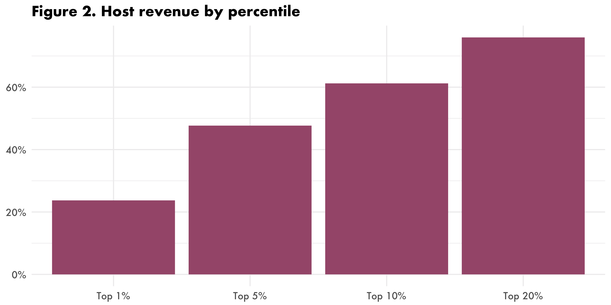
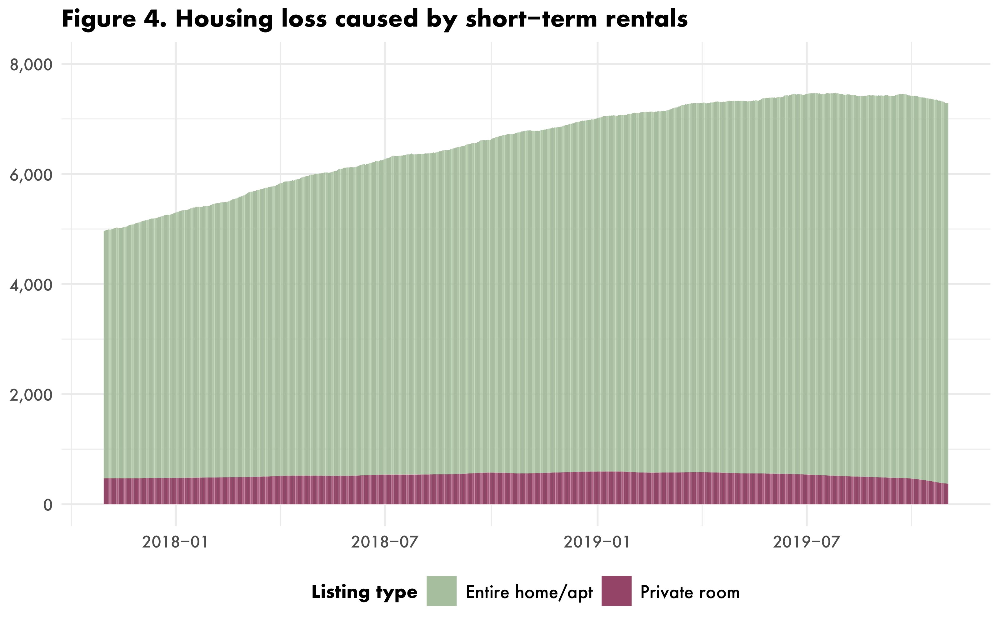
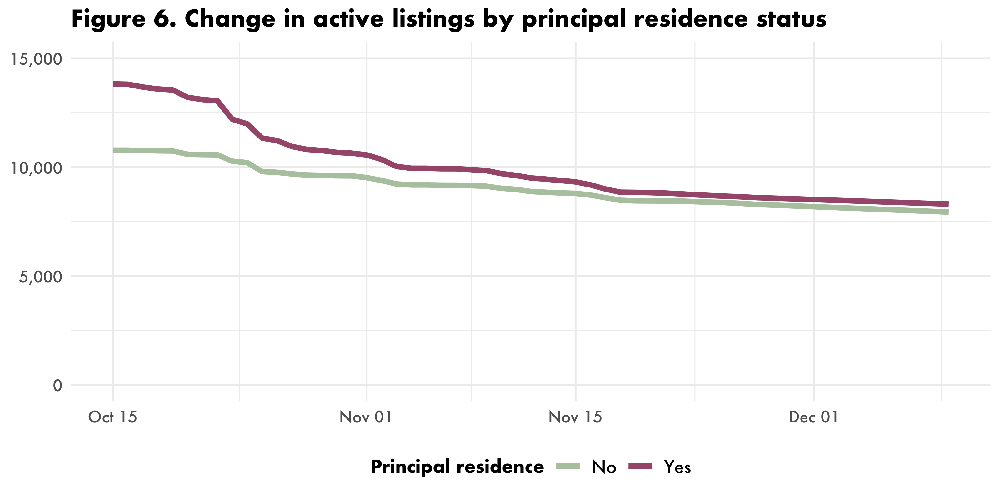

On November 1, 2019, the City of Los Angeles began enforcing STR regulations which had been active but ignored since the summer. The regulations restrict STRs to a host’s principal residence, forbid rentals of rent-stabilized units, and limit listings to 120 nights of reservation per year unless the host receives a special “extended home-sharing option”. In partnership with some housing advocates in Los Angeles, we conducted a small investigation into how this enforcement has gone so far, which we are now releasing as a public fact sheet.
The fact sheet summarizes the trajectory of the STR market in Los Angeles before and after the regulations began to be enforced. In brief, there has been a relatively large drop in active listings which is almost certainly the result of Airbnb removing listings on a blacklist of rent-stabilized units supplied to them by the City of Los Angeles before the November 1 start date for enforcement. The listings removed were no more likely to be in violation of the principal residence regulations than the ones which have remained on the platform, however. In particular, while 26.5% of listings which were likely not a host’s principal residence have been removed between October 15 and December 10, that figure is 39.8% for listings which likely were a host’s principal residence, and thus relatively innocuous home sharing operations. This suggests that there has not yet been any substantive enforcement of the new rules with respect to restricting commercial STRs, despite any claims to the contrary.
The fact sheet is available for download as a PDF; below I summarize the findings.
How many short-term rentals are active in Los Angeles?
On October 15, 2019, there were 24,599 active short-term rentals in the City of Los Angeles.
Alongside the other 17,685 Airbnb listings that were active at some point in the last twelve months (November 2018 - October 2019), they earned a combined $419.5 million in annual revenue. From October 2014 (when our data begins) until October 2018, the number of active STRs in the City of Los Angeles increased steadily, from just under 10,000 to a peak of 27,022 on 8 October 2018 (Figure 1). Throughout 2019 the number stagnated around 26,000, until mid-October, when active listings declined sharply, eventually reaching 17,559 on 26 November 2019. Below we discuss the pattern of listing removals in the context of the new Los Angeles STR regulations.

How is host revenue distributed in Los Angeles?
Host revenue is distributed in a highly uneven fashion in Los Angeles. Of the 15,600 hosts who earned revenue on Airbnb or HomeAway/VRBO last year, just 5% of them (780) earned nearly half (47.7%) of all platform revenue (Figure 2). Slightly fewer than half of the active listings were “multilistings” (i.e. listings operated by hosts who operate multiple listings), although these were responsible for roughly 2/3 of all platform revenue (Figure 3). After rising steadily for several years, the share of multilisting listings and revenue has declined somewhat in the last several months.


How many housing units have Airbnb and HomeAway taken off the market?
On 15 October 2019, our estimate is that STRs in Los Angeles were responsible for 7,289 units of lost housing—a 46.5% increase over the last two years. We estimate this by combining two measurements. The first is entire-home listings which are highly available throughout the year and which receive many bookings. Specifically, we define frequently rented entire-home (FREH) listings as entire- home listings which were available on Airbnb or HomeAway a majority of the year (at least 183 nights) and were booked a minimum of 90 nights. We then also identify entire housing units have been subdivided into multiple private-room listings, by finding clusters of three or more private-room listings operated by a single host, whose reported locations are close enough to each other that they could have originated in the same actual housing unit. Figure 4 shows the estimated daily amount of STR-induced housing loss over the last two years.

How many STR listings are located in the host’s principal residence?
Given that many of the removed listings were most likely removed for being located in rent-controlled units prior to the November 1 start date for active enforcement, the question remains as to whether other aspects of the regulations are being adequately enforced. One way to track this is to identify listings which have a high risk of not being located in a host’s principal residence—which is now illegal in Los Angeles. We estimate this by combining multiple activity data points about each listing. For example, entire-home multilistings will, with one important exception, by definition violate the principal residence requirement, since a person cannot claim multiple homes as their principal residence. However, it is possible that a host rents out their own principal residence occasionally while also operating additional entire-home listings, so we conservatively assume that the least frequently rented entire-home multilisting is in fact the host’s principal residence. To this number we add the FREH listings which were not already included in the list of multilistings, along with the private-room listings which are actually subdivided entire housing units. Finally, we add the small number of non-housing listings (such as vans and boats), which are not eligible for home
sharing under Los Angeles’ rules. In total, out of the 24,600 STR listings active on 15 October 2019, we believe that 43.8% (10,800) had a high likelihood of being in violation of the principal residence requirement in Los Angeles’ STR regulations.
What has happened to the illegal STRs since October 15?
As of November 1, the City claimed to be enforcing the rules (although we have shown that the enforcement actually began before that date). We have therefore tracked the activity status of each of the 24,600 listings each day between October 15 and November 27, and then again on December 10, to see what has happened with these listings. Figure 6 demonstrates the trend. Two results emerge from this. First, there has been a minimal reduction in the number of listings likely to be violating the City’s principal residence requirement. There were 10,800 such listings on October 15, and 7,935 of them were still active nearly two months later. In fact, the pace of takedowns has slowed down substantially from late October through early December. Second, the listings which have been removed since October 15 are actually disproportionately listings which are not in violation of the principal residence requirement. While 26.5% of likely-to-be-non-principal-residence listings have been removed, 39.8% of likely-to-be-principal-residence listings have been removed. In other words, the listings which were targeted by the initial takedowns in late October appear to have been disproportionately actual home sharing operations, while commercial operators violating the City’s regulations have by and large remained active on the platform.

Implications of the analysis
The bottom line is that the evidence does not suggest that the City’s enforcement efforts have been effective so far. While there has been a significant decline in total active listings since mid-October (probably corresponding to a blacklist of rent-stabilized properties), most of the commercial operations which the laws are also supposedly targeting appear to have avoided enforcement actions so far. This implies the need for substantially increased enforcement effort if the City’s policy goals of restricting short-term rentals to actual home sharing operations which do not threaten housing affordability and availability are to be realized.
Data and methodology
This analysis is based on a comprehensive analysis of 61 months (1 October 2014 to 31 October 2019) of short-term rental activity in Los Angeles, plus supplemental analysis for 1 November – 10 December 2019. For each day in this period, we analyze the activity of every Airbnb, HomeAway and VRBO listing active in the city, a total of 52.8 million data points across 91,425 listings. The report relies on two data sources: 1) a proprietary dataset of Airbnb activity from the consulting firm AirDNA which has performed daily “web scrapes” of Airbnb’s public website since mid-2014; 2) Additional scraping performed by UPGo on December 9-10.
Acknowledgments
This report was commissioned and funded by Hadsell Stormer & Renick LLP. The author from the School of Urban Planning, McGill University, is exclusively responsible for all analysis, findings, and conclusions.
‘STRs in Los Angeles: Are the Nov. 2019 regulations being enforced?’ is publicly available for download today.